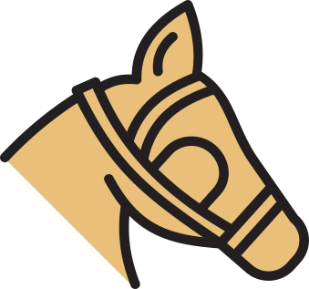
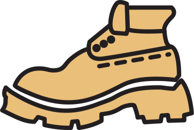
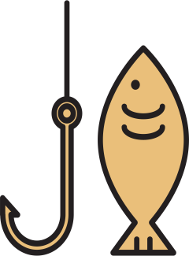
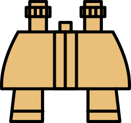

Yellowstone National Park is a huge natural preserve located in the north central part of the United States of America. It is one of the largest national parks in the central part of the American continent.Yellowstone became the first national park for all to enjoy the unique hydrothermal and geologic wonders. Yellowstone is as wondrous as it is complex.
The park is at the heart of the Greater Yellowstone Ecosystem, where nature and culture abound. About 5% covered by water; 15% by grassland; and 80% by forests. It is larger than Rhode Island and Delaware combined.
Hiking
Yellowstone encompasses more than 2.2 million acres, has more than 900 miles (1,449 km) of hiking trails, and is primarily managed as wilderness.
Fishing
About 50,000 of the park’s four million visitors fish each year. Fishing has been a popular recreation activity for visitors here for more than 100 years, and many people come to Yellowstone just to fish.
Horseback riding
Horseback riding is a great way to slow down and experience the park. The Park Lodges also offers one to two hours horse rides at Tower-Roosevelt and Canyon.



Water rafting and paddling
Using a boat offers a great way to see the park from a different perspective.Yellowstone Lake is the largest water body of the park, with the water surface area close to 136 square miles, maximum length of about 20 miles and maximum width of about 15 miles.
Sightseeing
Yellowstone's abundant wildlife is as famous as its geysers. In the park, animals have over 3,000 square miles (over 7,500 square km) of habitat available to them

3468.4 mi
Yellowstone National Park is in the northwest region of the United States and covers 3,472 square miles.
1872
In 1871, artist Thomas Moran and photographer William Henry Jackson used their mediums to capture the beauty of the park.Congress saw this and the next year, Congress and President Ulysses Grant created Yellowstone National Park.
44°36’N 110°30’W
Even though the official address is to the state of Wyoming, Yellowstone is actually in three states. The majority Yellowstone (96%) is in Wyoming. A small section of the park (3%) to the north and northwest is in Montana. And a small section of the park (1%) to the west is in Idaho.
go to nps.org for more info
Citations
https://www.nps.gov
https://www.yellowstonepark.com
https://www.latlong.net